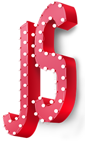

!--
碰到不懂的东西，想不出来的东西
自己思考半个小时
问身边的同学
找老师
千万不要害羞 不懂就问
保证睡眠 十一点之前睡觉 七点半
适当的横向拓展 做网站 产品经理 ———— 设计师 —————— 前端 ———— 后端
修电脑 —————— 装软件 破解软件 重装系统
电脑基本硬件：
CPU
显卡
内存条
硬盘
编辑器：
sublime（基于插件）
dreamweaver（以后出去找不到工作的）
Hbuilder （稍微基础了一点点）
webstorm（比较推荐）
atom(基于插件，没有汉化版本)
vsCode
记事本
浏览器：两大类
IE浏览器 ： 不跟随标准走（下载其他浏览器的最佳浏览器）
其他浏览器 chrome(谷歌浏览器) 火狐浏览器 苹果
语言
html（Hypertext Markup Language）
超
文本 图片，视频，音频，动画
标记: 这是这个语言最大的特点
语言
css（Cascading Style Sheets）—— 样式
层叠
样式
表
JavaScript 脚本语言（它帮助我们完成一些功能性的工作）
每天新建一个新的文件夹用来保存当天的课件和作业
收到课件之后先看一遍课件，把当天讲的知识点整理一下
做练习 ---- 在做练习的过程中碰到的问题也记录下来。插件式学习
一个练习放在一个单独的文件夹里面
Java
C
C++
PHP
.net
-->